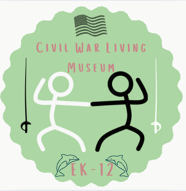

Civil War Living Museum
Home
Map
Explore more
About Us
Museum Planners/Organizational Engineers:
DO NOT GO TO GREAT CLIPS!!!!
Hello, my name is Lev. I am an 8th grader at Emmerson K-12, and my partner Emmett and I are the museum organizers/planners. This means that I work on the layout of exhibits and displays. I make sure everything is in chronological order or organized by theme to create the best possible visitor experience. On museum day, I will be doing a reading of a speech by William Bircher. My project is a 3d render of the battle at Gettysburg. Outside of school I enjoy programming, videogames, 3D modeling, board games, and sailing. Hope you have a fun time learning about the Civil War!
Emmett has not found a image yet. This will be updated later.
My name is Emmett W. Christensen, 8th grade. My role in the museum is as one of two Museum Organizers, along with my partner Lev. My live performance is as General William T. Sherman of the Union. I've written a short newspaper that takes place during the week of December 16th - December 22nd, 1860. One new thing I leaned while working on this museum that I had not thought of before, is that when the slaves were freed, sometimes they didn't know what to do. A fun fact about myself is that I am left handed.
Technology Consultants and Technicians:
Image Details
My name is Cormac, and I am currently in 8th grade at Emmerson K-12, and will be going to Lake Washington High School next year. For the Living Museum project, I am actively involved in the Tech group, mainly working on the website. During the live museum performance, I will be preforming as General Robert E. Lee and also be doing a dramatic reading of Southern Secession Documents. In my free time, I enjoy programming small indie games, reading, and playing with my two dogs (Frida and Bastion). I also enjoy rock climbing and playing board games.
I hope you enjoy the Musuem!
Image Details
Hey! My name is Alana and I'm in 8th grade at EK-12 and loving it! My team role for this museum is Technician/Technology consultant. Along with helping to organize and set up technological exhibits and trying to troubleshoot any technical difficulties that pop up during the museum, I am, along with the other Technician/Technology consultant, Cormac, helping create a live website for our Living Museum through HTML and CSS code! For my live performance, I will be playing the part of our 16th president, Abraham Lincoln! I will be reading the Gettysburg Address, in which Lincoln dedicates a field to the union soldiers who so bravely gave their lives during combat in the Civil war. For my individual exhibit, I am creating an online 3D model of a southern plantation house which will be based of the house that Robert E. Lee lived in, and styled similarly to George Washington's beloved Mount Vernon. In learning about the Civil War, I've loved learning about the different women in the war! Although they may not have been on the battlefield like most of the men, they still played massive roles in the war, and changed history forever with their heroic actions. A fun fact about me is that I am a completive gymnast for Advantage Gymnastics Academy! I recently competed at the State Championships and was thrilled to place 3rd on Uneven bars, 2nd on both Balance beam and Floor Exercise, and 4th All-Around! I hope you enjoy all the exhibits that we have worked so hard on, and I hope the knowledge you gain here will stay with you for a long, long time!
Visitor Experience Specialists:

Image Details
Hello, my name is Maria and I'm currently in 8th grade at Emerson K-12. My partner, Mary Jane and I have the team role in this museum of a Visitor Experience Specialist. This means that we create pamphlets, posters, and plan ahead for museum day to help establish a welcoming, inclusive environment. A individual project I have is an informative poster about the Women's Roles in the Civil War, such as nurses and spies, which have been a few aspects that I enjoyed learning about. I will doing a live performance on Mary Chesnut by reading a primary source she wrote. A fun fact about me is that I absolutely love plants. I hope you enjoy our museum and learn so much information about the Civil War.
Image Details
Hi, my name MJ! I am in 7th grade at Emmerson K-12 and I dislike sharing personal information. My role In this summative, the living museum, is a Visitor Experience Specialist. My partner, Maria, and I make the posters and pamphlets as well as welcoming visitors and answering questions they have such as "where's the bathroom?" For the assignment, the live performance, I will be acting as Julia Ward Howe, abolitionist and writer. I will be reading one of her many writings or at least an excerpt from them in between my piano performances of The Battle Hym of The Republic. I will have displayed a poster on the civil liberties of the Civil War. If I had to say a fun fact about myself I would say that I was mildly amused by the photo Cormac chose or that I have a decent coin collection, whichever is the 'funnest'.
Signage and Labeling Artists
Image Details
Hiiiiiiiiiiiiiiiiiiiiii!!! My name is Kaylin, I am in in 8th grade at EK-12. My team role for the museum is signage and labelling. Mai and I made a logo for the museum and different exhibits! For my living performance I am going to be Harriet Tubman, an abolitionist and social activist. My individual project is a video about how the civil war affects us today! I disliked learning about the civil war but I enjoyed working on my projects for the museum. Outside of school I enjoy doing ballet, skiing, reading and playing video games! I'm really excited to show my work at the museum! FYI I won't be at the museum, but I hope you enjoy! :)
Image Details
Hi. My name is Mai. I'm in 8th grade at EK12. My role is to do signage and labelling. Kaylin and I are working on making a logo that is fun and brings out what the museum is about. During the live performance I will be doing Carrie Berry. As Carrie, Outside of school I enjoy doing musical theater at Redmond Theater. My current role is Cruella Deville.
Museum Environment:
Image Details
My Name is Wesley, I'm in 8th Grade I'm from EK-12, my individual project is the battle of Antietam, my favorite thing you have learned about the Civil War was when we read NLFD and saw what he saw and how he felt after being freed because of the war, a fun fact about me is that I really like video games and play daily as well as really liking medieval history.
Image Details
Hi, my name is Levi, I'm in 8th grade and I'm from Emerson K12, my Indvidual project is the battle of Gettysburg and my favorite thing I have learned is the Civil War battles. A fun fact about me is that I like sports, geography and lots of other things! Like Video games and history in general. Hope you enjoy our hard work we have done and hope you also enjoy our exhibits and learn about the Civil War!
Curators:
Image Details
Hi! My name is Naomi and I am in 7th grade. My role in this museum is to be a curator, which means that I communicate with other teams, organize ideas, and make sure that every group is on the same page to create a well-structured and amazing museum. My teammate is Fynlee and we work together to produce a captivating, immersive, and thought provoking museum. My live performance will be on Clara Barton, a nurse on the battlefield in the Civil War. My individual project is a posterboard on the advantages and disadvantages of the North and the South through differences between economies, factories, general population, and many more factors, which have been my favorite things that I have learned about during the creation of this museum. I enjoy playing the ukulele, snuggling with my dog Bennie, any and all things plants, and will absolutely never say no to a shopping trip to Target. I am thrilled to showcase what I have learned!
Image Details
Hello! My name is Fynlee (Jane;) I am in 8th grade here at Emerson K-12. My job is to be a curator for the Living Museum. That means that I connect other teams, pitch ideas to our class, and make sure that all ideas being created are cohesive and up to standard. I work with my teammate Naomi to support all of the teams that are also working to create an amazing, inclusive, and interactive museum! On museum day I will be in character acting as former slave Boston Blackwell. You can find my individual work in the Timeline of Causes exhibit and learn all about the events that led up to the Civil War. Personally, I have had a blast learning about our nation's history, like how the Civil War effected slavery and a colored person's rights. I am driven and passionate about what I believe in. I am a dedicated reader, soccer goalie, and golfer who loves to write fun fictional stories, and enjoys all things art! I hope you have a blast learning all about the Civil War at our Living Museum!
©2025 Emerson Tech Inc. No rights reserved
Students
Lev:
Emmett:
Cormac:
Alana:
Maria: